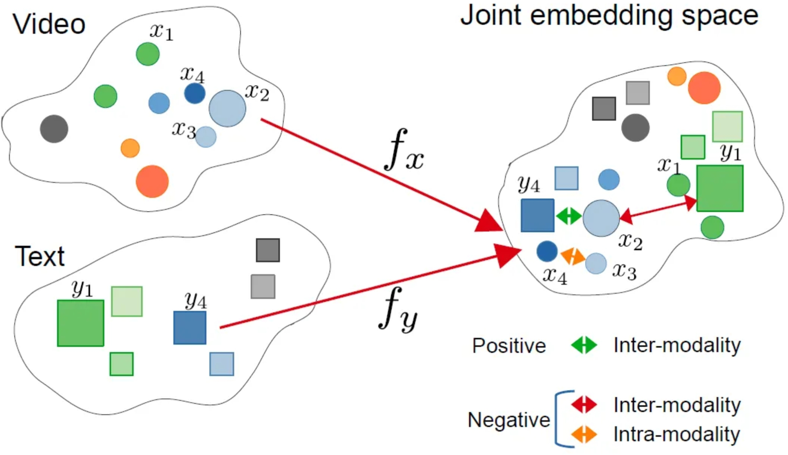

VLM与LLM
如果说我们有一张图片、一个图表想让大模型来帮忙理解那应该要怎么实现了？
标准的LLM语言大模型只能处理文本序列，是不能够读取图像的，如果没有办法将视觉的数据转换为LLM能够理解的形式，那么LLM是无法处理的。需要注意的是我们这里说的LLM并不是transformer，LLM指的是大语言模型如DeepSeek，GPT，Qwen，其是使用了transformer架构应用，而transformer是一种神经网络架构。LLM的token专门指的是文本token来自Tokennizer其输入是字节流，而transformer不一定是文本单位，可以是任何序列元素如词、图像（上节说的ViT）等。
要解决语言大模型理解图片，那么这就是视觉-语言大模派上用场了。回顾一下我们此前说的ViT视觉大模型，是不是就是用提取图像特征的，因此本章节我们要介绍的正是视觉大模型与语言大模型的融合：vision language model，即视觉-语言大模型。
视觉-语言大模型是视觉大模型+语言大模型的结合，其主要有哪些用途？核心用处是让 AI 能够“读图如读文”，在多模态场景下实现理解、生成和交互，如下示例：
- 内容理解：多模态的问答VQA，比如给一张图让大模型理解图片里面描述了什么，让其识别图片里物体、动作、关系，自动生成图片说明（Image Captioning）等等。
- 信息获取与搜索：给一张图找对应的描述，或给一句话找到相关图片（比如电商商品搜索）以及搜索引擎文字搜图或图搜文字等。
模型结构
{kind=link}
发展到今天有很多的视觉-语言大模型，各自都有自己的架构实现。我们先以VILA为例来说明一下视觉-语言大模型的关键组件，上图来自论文：VILA: On Pre-training for Visual Language Models。
上图我们先来分析一下其运作流程，可以分为左右两部分：左图可以看成是怎么跑起来的(数据流推理/前向)，右图是如何训练的步骤。
数据流
左图：数据流推理
- ViT: 首先将图像送入ViT视觉编码器，提取出视觉特征。
- Projector：因为ViT输出的特征维度可能与LLM词嵌入维度不一致，所以这里也需要通过一个线性层/小MLP做映射，把视觉特征空间转换为LLM的嵌入空间为，为上图的visual tokens。
- token融合：文本提示经过tokenizer转换为text tual tokens与visu tokens在同一序列中进行拼接或交错输入到LLM。
- LLM生成：进入LLM后，视觉与文本已在同一token流中就可以共同参与计算注意力，最后输出最后的结果a cat。
训练策略
右图：训练策略
训练主要分为3个阶段，projector初始化，交错式预训练、监督微调，主要涉及projector和LLM模型参数更新，火焰代表参数会被更新，雪花代表冻结不更新。
- Step 0 Projector初始化：只训Projector，LLM冻结，通常ViT也冻结，目的是先把视觉特征大致对齐到LLM词向量空间，避免一上来就动LLM破坏语言能力。
- Step 1 交错式预训练：同时更新Projector与LLM，在包含图像-文本交错（图像token混在文本序列里）的数据上做自回归训练。更新LLM才参数才能让LLM学会"在文本上下文中使用视觉特征"；图像和文本的输入进行交错能够教会模型跨模态对齐与引用。
- Step2 监督微调：联合微调projector与LLM，输入数据是指令时的多模态问答/对话。这样可以把能力对齐到agent任务上，同时避免LLM文本能力退化。
小结
通过VILA架构为例，我们大概了解了VLM视觉-语言大模型的架构，我们总结下VLM模型架构主要可以分为三大部分：
- 视觉编码器：将视觉输入转换为结构化的数值表示，提取语义信息。如基于transformer架构的ViT，将图像分割成小块，通过transformer编码全局和局部特征；如传统基于CNN卷积神经网络ResNet，擅长提取局部纹理特征。
- 投影器：视觉和文本嵌入必须对齐到一个共享的多模态嵌入空间。通常由一个较小的模块完成，称为投影层或融合层：常见的实现方式有MLP通过全连接层转化维度(如DeepSeek-VL)；交叉注意力机制通过动态关联图像区域与文本token(如llama 3.2 vision)，增强空间理解。
- LLM：接收图像+文本融合后的多模态输入，生成自然语言响应（如描述、答案、推理）。
QA1:这里的投影器projector与此前我们分析ViT中的projection线性投影有什么不一样？
ViT中的projection作用是将图像分割后的每个小块线性映射为固定维度向量(token)作为transformer编码器的输入;而VLM的projector是将视觉编码器(如ViT)输出特征映射到语言大模型（LLM）的文本嵌入空间，解决跨模态语义鸿沟。一个是作用在ViT的输入映射为transformer的标准输入另外是一个作用再ViT的输出映射为LLM的标准输入。
QA2:为什么要将图像和文本进行融合多模态嵌入空间？ 
{kind=link}
多模态嵌入空间是VLM具备推理能力的关键，通过在同一潜在空间表示视觉和文本信息，主要有以下优势：
- 上下文感知：使不同模态之间能够进行丰富的交互，这意味着模型能够将文本概念（例如，“公交车”、“十字路口”）准确地与视觉特征信息（公交车位置、颜色、十字路口）连续起来。
- 语义连接：将抽象的文本概念与具体的视觉示例进行对齐。例如模型不仅将“行人”理解为单词，还将其视为图像中可视觉识别的实体。
- 跨模态推理：允许模型在不同模态之间进行推理，回答复杂的视觉问题，进行逻辑推断，或检测微妙的视觉-文本差异。
模型预训练
训练史
{kind=link}
先来看看视觉识别训练的发展，可以划分为5个阶段：传统机器学习与预测，深度学习从零训练与预测，监督式预训练、微调与预测，无监督预训练、微调与预测，视觉语言模型预训练与零样本预测。稍微总结一下各自特点。
- 传统机器学习与预测：需要人工设计学习特征。
- 深度学习从零训练与预测：从零自己标注大量数据（因为没法迁移），从零训练。
- 监督式预训练、微调与预测：预训练复用公开标注好的海量数据（可以迁移，所以可用公开别人标注好的海量数据），从零标注一些少量数进行微调。
- 无监督预训练、微调与预测：预训练数据集再扩大了，可以直接爬取互联网的数据进行训练，但还是需要从零标注一些少量数据进行微调。
- 视觉语言模型预训练与零样本预测：不需要进行微调了，那么也不需要标注的数据集了，做到零样本。
VLM的预训练与零样本预测方式与过往的相比，对下游视觉识别任务上实现零样本，去掉了微调的过程，那么这种方式就可以有效利用大规模的网络数据。
预训练架构
因为VLM有很多种模型架构，因此预训练的架构也有区别，下面列出常见的几种。
{kind=link}
- 双塔式架构：视觉和文本模态分别通过独立的编码器处理（如ViT处理图像、BERT处理文本），模态交互仅发生在编码后的特征层面，在最后进行融合，典型的模型有CLIP、ALIGN等。
- 双分支架构：在独立编码器基础上引入动态交互模块，支持灵活切换双塔或单塔模式，实现任务自适应融合如VLMo、Mini-Gemini等。
- 单塔式架构：像和文本输入共享同一Transformer编码器，通过交叉注意力机制实现早期深度融合，典型的模型如ViLT，FLAVA等。
预训练目标
前面阐述了当前视觉-语言大模型通常采用预训练与零样本预测的方式。那么在视觉语言大模型（Vision-Language Models, VLM）中我们的预训练目标是什么了？所谓预训练目标（Pre-training Objectives）是让模型从海量无标注图文对中自动学习跨模态关联的核心机制。这些目标的目的建立视觉与语言模态的语义对齐，为下游任务（如视觉问答、图像描述）提供通用表征基础。而当前的训练目标大致可以分为3类：对比目标、生成目标、对齐目标。
- 对比目标：让模型学会"配对"正确的图文，并区分错误的组合，比如正样本匹配的图文对（如猫图 + “一只猫”），模型需让它们的特征向量高度相似；负样本不匹配的图文对（如猫图 + “一辆汽车”），模型需让它们的特征向量差异巨大。计算的损失函数为所有配对的相似度误差（如 InfoNCE损失），指导模型调整参数，代表模型有CLIP、ALIGN等，该方式一般适用于零样本分类、图文检索的模型。
- 生成目标：让模型“填空”或“创作”，通过预测缺失内容学习深层语义。具体输入通过mask遮住文本或图像，训练模型让其复原得到网络权重。该方式一般应用与图像描述、视觉问答（VQA）的模型。
- 对齐目标：让模型能够把句子的词精准对应到图中位置，要求最高。比如用目标检测框出识别图中的物体（如汽车），与文本中的词精确关联。该方式一般用于目标检测、语义分割等场景。
VLM模型
当前已经出现了很多视觉语言模型，各自的模型都具有独特的功能，在视觉语言研究领域和实际应用上扮演着重要的贡献，除了在第2章节我们介绍的VILA外，这里我们在本章节再补充举例几个进行简要说明一下。
CLIP
{kind=link}
上图是CLIP模型，是一个典型的双塔式视觉-语言模型，由视觉编码器（ViT）和文本编码器（Transformer）等核心组件构成。通过预训练对比目标的方式学习实现图像与文本的跨膜态对齐，其核心创新点在于无需任务特定训练，直接利用自然语言提示（Pormt）完成零样本预测，支持识别训练数据中为出现的新类别。
从图中我们可以看成可以分为3个阶段，对比预训练、创建零样本分类器、零样本预测。
（1）对比预训练阶段
- 输入是海量的图文对，如图片输入狗+文本输入"pepper the aussie pup"。
- 编码：文本编码器（如transformer）将文本嵌入向量，图像编码器（如ViT/ResNet）将图像嵌入向量。
- 目标：图文预文本嵌入向量的点积度量图文相似性。通过对比损失(infoNCE)计算图文相似度矩阵。拉近匹配对（如对角线深蓝块，如狗图与"狗"文本），推远不匹配对（非对角线浅色块，如狗图与“汽车”文本）。
（2）创建零样本分类器
- 输入：新任务的类别标签（如 "dog", "bird", "car"）。
- 处理：将标签转化为提示文本（如 "a photo of a {label}"），文本编码器生成所有标签的文本嵌入向量。
- 输出：得到一组文本嵌入，构成无需训练的分类器权重（传统模型需图像数据训练分类头）
（3）零样本预测
- 输入：一张新图像（如鸟的图片）。
- 处理：图像编码器生成图像嵌入向量（左侧绿色向量），计算该向量与所有类别文本嵌入相似度。
- 输出：选择相似度最高的文本标签作为预测结果（如输出 "a photo of a bird"）。
总结一下就是，通过上面的预训练，将配对的图文靠近，非配对的原理，学到语义对齐的公共空间，这样在在推理时把“类别标签”也写成一句话，当作“文本查询”；用这句“查询”去和图像向量比相似度，谁最像选谁。
LLaVA
{kind=link}
LLaVA是把视觉模型提取的图像特征通过一个映射层转成语言模型能理解的 token，然后和用户的语言指令一起输入到大语言模型（LLM），从而实现图像理解与多模态对话。其架构主要由Vision Encoder（视觉编码器）、Projector（视觉特征投影）、Language Instruction（语言指令输入）、LLM大模型几个组件构成，跟我们前面第2章节总结的结构类似，这里就不过多阐述了。下面简要说一下流程：
- 输入图像：输入的图像通过Vision Encoder提取特征$Z_{v}$。具体来说，预训练用的是CLIP模型的视觉编码器ViT-L/14。
- 特征投影：通过projector W提取的图像特征$Z_{v}$转换成LLM能够处理的token表示$H_{v}$。
- 输入指令：用户文本$X_{q}$转换为token表示$H_{q}$。
- 拼接输入：将[$H_{v}$,$H_{q}$]拼接一起送入LLM。
- 语言生成：LLM输出语言响应$X_{a}$，完成图像理解+问答。
LLaVA 是一个用于对齐视觉和语言数据以处理复杂多模态任务的复杂模型。它采用独特的方法，将图像处理与大型语言模型融合，以增强其解释和响应图像相关查询的能力。通过利用文本和视觉表示，LLaVA 在视觉问答、交互式图像生成以及涉及图像的基于对话的任务中表现出色。其与强大语言模型的集成使其能够生成详细描述，并协助实时视觉语言交互。
参考： 1. An Introduction to Vision-Language Modeling 2. Vision Language Transformers: A Survey 3. Understanding Vision-Language Models (VLMs): A Practical Guide 4. Guide to Vision-Language Models (VLMs)